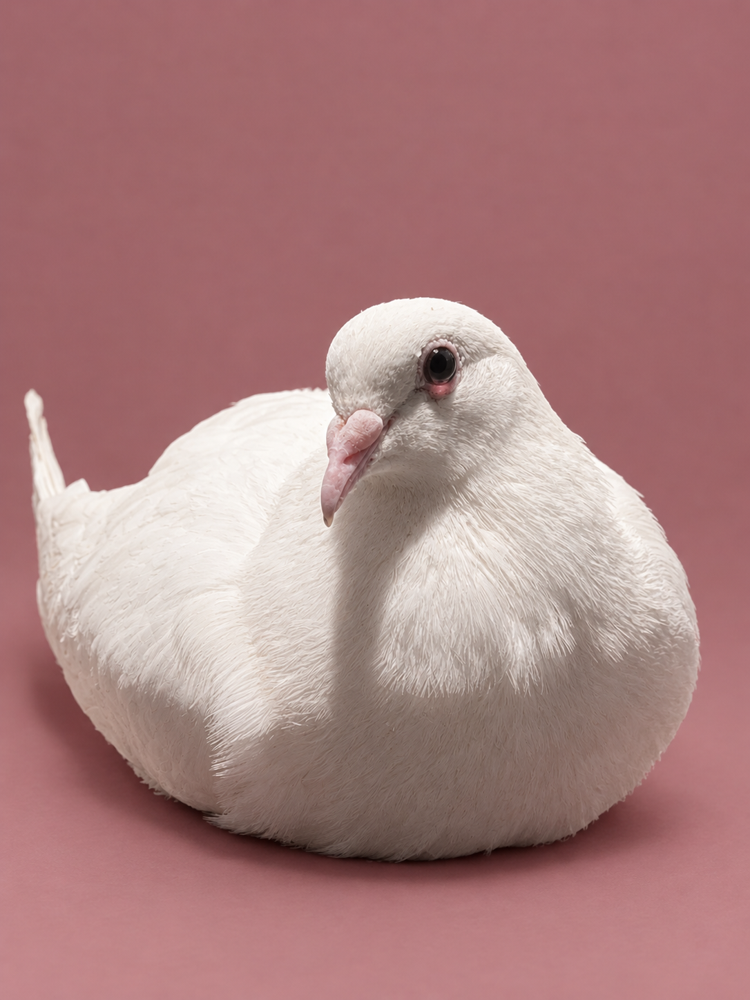

Ready to be adopted!
Caviar is a sweet white pigeon who is likely the result of a "dove" release. She stuck out like a sore thumb in the wild, alone and defenseless against predators.
With the good eyes of a citizen, Caviar was seen and covered in a basket while waiting to be rescued. After a few months of gaining weight and being treated for parasites, we're happy to report that they're now ready for a new life, hopefully cuddled up in a warm nest while you do your daily chores.
Caviar is still learning that humans aren't scary beings. She absolutely loves safflowers, and though she can't be convinced to eat out of hands just yet, she's quickly warming up to being a spoiled house pigeon!
